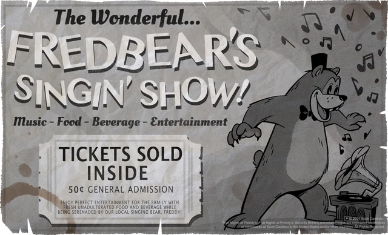
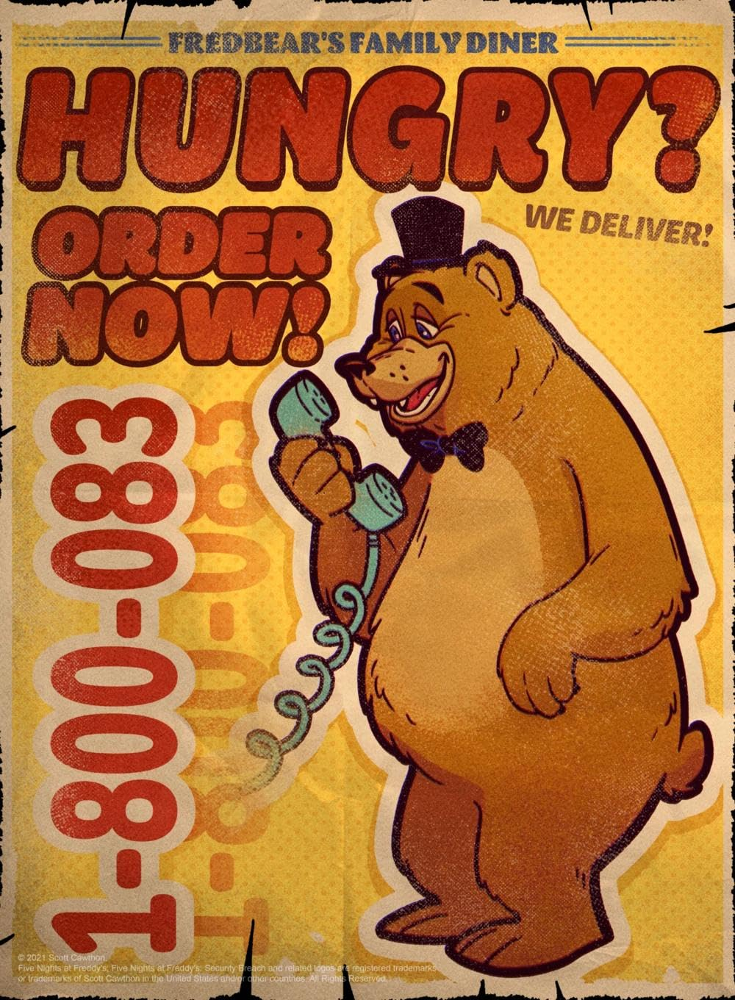
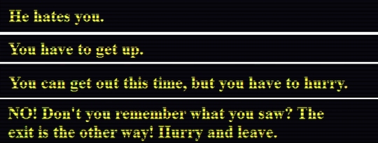
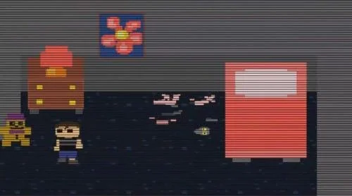

The Timeline!
Troubles With Time
The timeline starts in what is believed to be roughly 1950’s- due to the more realistic elements, such as the poster for Fredbear's Singing Show- a live dancing bear show, which was a cheap popular entertainment after the Great Depression. For William Afton to start the Freddie’s brand, he would need to have seen the show which he used as inspiration for the diner. So shortly after his success, he merged the knock off version- Chica’s Party World. Which was how he became the business partner for Henry Emily.
 His youngest son’s death is pretty solidly placed in 1983, after he was forced close to the Freddy animatronic and his head was bit.This is what led to Afton killing Charlotte “Charlie” Emily outside the diner, as he blamed Henry for the death of his son. This led to Afton going on a murder spree of 5 kids in June of 1985. But this is where the biggest problem for the FNaF timeline comes in.
Elizabeth Afton- William Aftons’s daughter -dies after getting too close to Baby- an animatronic with a claw used to capture kids. However her death logically seems like it would come before the Crying Child’s- the only true best fitting name for the youngest Afton as no one has been able to create solid evidence stating his name. This is due to the fact that in FNaF 4- the only game of the originals to not take place at a pizzeria but at a house -Plushie FredBear, whom had a walkie talkie connected to William’s, tells Crying Child to “remember what he saw”. Crying Child also has a large fear of the animatronics. There’s also an empty girl’s room in that same minigame.
Also bringing in the structure of the animatronics, they appear to be some of the more early versions. So they most likely would come first in the timeline.
 But there’s no way for Baby to be here- or anyone else from her resturant to exist. Afton has no motive to kill. Why would he be making killer robots at this point? None of his kids- which was the reason he wanted to take revenge on Henry Emily. So the question becomes, how would she be the death he saw?
But this all to say, the problem with the timeline goes deep. But why does it matter? To understand the what is going on in the games, you have to be able to understand the story itself. Without that, it's just working the night shirt at a deadly pizzeria. It's fun, but you miss out on a lot of important and fun little mysteries to solve. To be blunt, figure out the timeline has become a major part of the fun of the FNaF franchise. So look around to see what the story is saying.
.png)